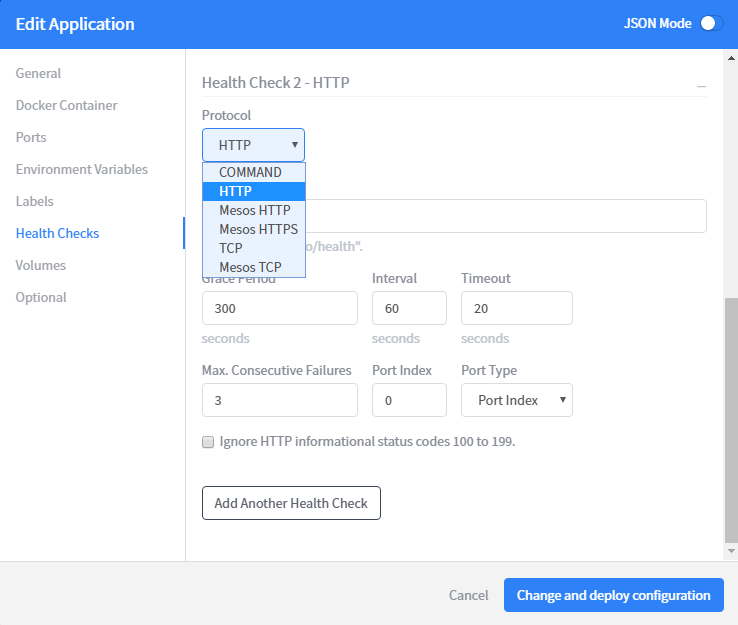

Service Unavailable During Marathon Application Restart
Marathon provides a variety of health check methods

Commonly used ones are TCP and HTTP.
TCP checks whether the port exists. If it exists, the instance is considered healthy;
HTTP checks the HTTP return code of the specified URL. If the return code is normal (2xx, 3xx), the instance is considered healthy;
There will be differences between these two methods during the restart process:
1) TCP: Since there is a period of time between the existence of the port and the availability of the service, the new instance is considered "healthy" during this period, but it cannot respond to the service. At the same time, the old instance is stopped, resulting in a period of time when the service is unavailable;
2) HTTP: The prerequisite for normal return code is that the service is available;
If you want the restart process service to be always available, you need to use HTTP to do health checks;